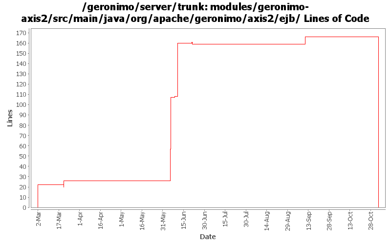

[root]/modules/geronimo-axis2/src/main/java/org/apache/geronimo/axis2/ejb

| Author | Changes | Lines of Code | Lines per Change |
|---|---|---|---|
| Totals | 33 (100.0%) | 229 (100.0%) | 6.9 |
| gawor | 16 (48.5%) | 174 (76.0%) | 10.8 |
| dims | 4 (12.1%) | 28 (12.2%) | 7.0 |
| jdillon | 2 (6.1%) | 18 (7.9%) | 9.0 |
| linsun | 4 (12.1%) | 9 (3.9%) | 2.2 |
| prasad | 7 (21.2%) | 0 (0.0%) | 0.0 |
GERONIMO-3565. Modules distributed amongst framework/modules and plugins
0 lines of code changed in 7 files:
fix axis2 ws ejb exception handling (related to GERONIMO-3462)
7 lines of code changed in 1 file:
GERONIMO-3437 - Axis2: serviceimplClass being null caused NPE at invoke in JavaBeanDispatcher
3 lines of code changed in 2 files:
Switch to use SoapMessageContext which has a public constructor
2 lines of code changed in 1 file:
fix build break - ProtectedMessageContext.java is removed by Axis2 4 hours ago! :-(
4 lines of code changed in 1 file:
handler injection for ejb-based ws
57 lines of code changed in 4 files:
getting service injection working right plus a bunch of other improvements
4 lines of code changed in 1 file:
handle ejb-based web servies annotated with WebServiceProvider
59 lines of code changed in 3 files:
initial ws support for ejb-based endpoints for axis2
47 lines of code changed in 7 files:
Add/update headers
18 lines of code changed in 2 files:
remove jaxb generated code, use the xmlbeans code generated from the j2ee 5 schema instead
6 lines of code changed in 2 files:
Fix for GERONIMO-2913 - minor changes to JettyEJBWebServiceContext and TomcatEJBWebServiceContext for Axis2
Fix for GERONIMO-2914 - Axis2: a few changes to set the servicepath, contextroot correctly in EJB to allow getWSDL() test working correctly
Fix for GERONIMO-2894 - Restructure geronimo-axis2 code to split between EJB and POJO containers
Thanks a ton Lin.
22 lines of code changed in 2 files: